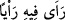
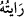
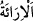
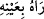
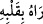

inanç sahibi olduğu zaman: “__WORD__ denir. “__WORD__ ise ona danıştım demektir.
Âyetteki “__WORD__ fiilinin bilmek anlamındaki “ru’yet” kökünden gelmesi de
mümkündür. Biri bir şeyi gördüğü zaman: “__WORD__ gözüyle gördü”; bir şeyi bildiği zaman
ise, “__WORD__ kalbiyle gördü” denir. Buna göre âyetin mânâsı şöyle olur: “Size ancak
kendi bildiklerimi öğretiyorum. Size açıkça söylediklerimin aksini içimde
gizlemiyorum.”
Oysa Firavun bu sözleriyle yalan söylemekteydi. Çünkü içinde müthiş bir korku
hissetmekteydi. Ama erkeklik taslıyor; önem vermiyormuş gibi gösteriyordu. Bu korku
olmasaydı, hiç kimsenin fikrine başvurmazdı.
Mesnevî’de ise şöyle der: Firavun’un istişâre etme alışkanlığı vardı. Hatta bazı
durumlarda Mûsâ’nın sözlerinin tesirinden gönlü yumuşar, îmana meylederdi. Hanımı
Âsiye’ye danışır o da kendisine îman edip Mûsâ’ya ittiba etmesini tavsiye ederdi.
Ancak veziri Hâmân’a danıştığında imandan vazgeçirirdi.
Mesnevî’den:
Şöyle derdi: Şimdiye dek kraldın.
Şimdi aldanıp da bir çulsuza kul mu olmak istiyorsun?
Hâmân’ın sözü, tıpkı mancınıktan atılan taş gibi
Gelip Firavun’un camdan evine çarpardı.
O, güzel konuşan Kelîm’in yüz günde
Yaptığı her şeyi bir günde yıkardı
Hevâsına yenik düşen vezirdir aklın;
İçinde Allah’a ulaşmanı engelleyen yol kesicidir.
Böyle veziri olan padişahın vay hâline!
Her ikisinin de mekânı acı verici cehennemdir.
Hevânı kendine vezir yapma.
Yoksa temiz ruhun namazdan uzaklaşır.
İşlerinde Âsaf gibi elinden tutacak
Veziri olan padişaha ne mutlu!
Âdil padişah, böyle bir vezirle yan yana olunca
Onun adı “Nûr üstüne nûr” olur.
Firavun gibi padişahla Hâman gibi vezir
Bir araya gelince ikisinin de hüsrandan kaçışı olmaz.
Bu durumda sonuç, “Üst üste çöken karanlıklar”dır.
Hesap gününde onlara ne akıl yarar sağlar, ne de devlet ve tâlih.
Cenab-ı Hak’tan ruh temizliği ve gönül saflığı niyaz ederiz.